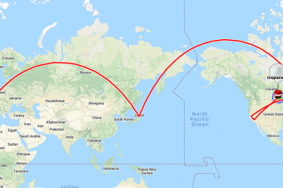
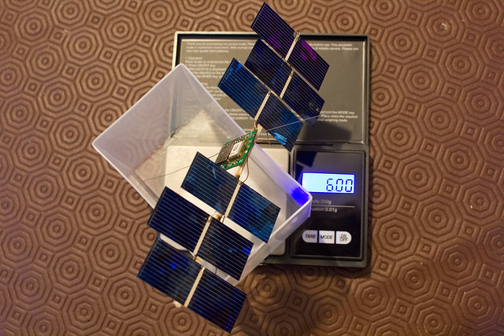
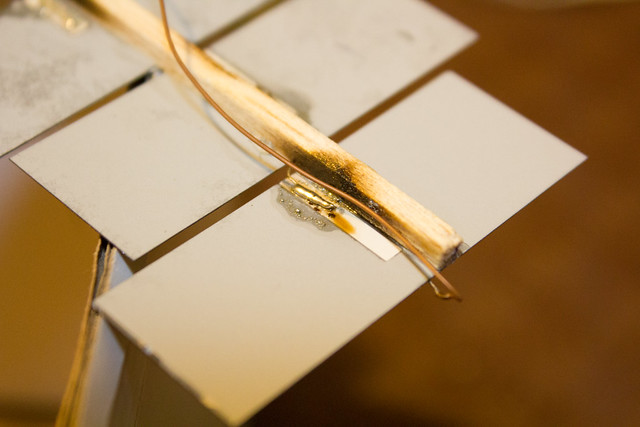
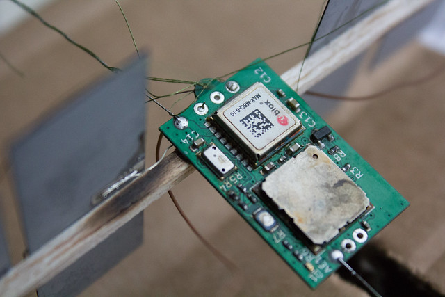
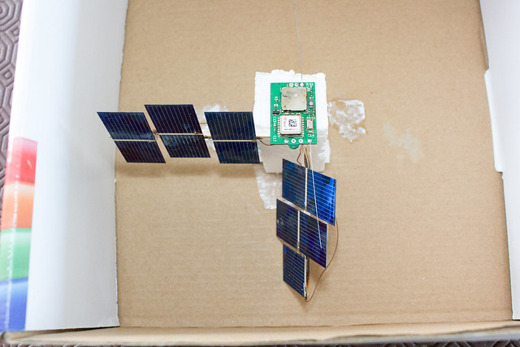

First (unconfirmed) circumnavigation of the Earth by IC Space Society balloon: ICSPACE22
from the archive

ICSPACE22 was launched Monday 19 October 2020 with a 6.0g tracker under a party balloon filled with pure hydrogen. The tracker is solar powered and transmits LoRaWAN packets of its position to gateways connected to The Things Network.
The balloon made an appearance over Japan 6 days later, and Canada 3 days after. It disappeared from radio coverage as it entered the Atlantic and was expected to pass over the arctic regions based on wind predictions, where there is no radio coverage.
Astonishingly, it reappeared last Sunday, 8 November 2020 over California, USA. This was day 20 since launch. It travelled past North Dakota, USA into Manitoba Province, Canada the next day.
We cannot verify if it actually did a full lap around the world because we have no data from the 10 days it went out of radio coverage. Based on wind predictions, and the time passed since we last saw it, it is very likely it has completed one lap around the world.
Global coverage of The Things Network is very poor. We hear from the balloon only when it is over Europe, Japan and America. On future flights, we plan to make the tracker send down at least 8 past positions of the balloon in each transmission, in order to allow us to know where it flew while it was out of radio coverage. It seems to come within radio coverage every 5-10 days.
Many thanks to Steve Randall for launching the balloon from Felixstowe. Thanks be to God for this success
The key stats for the balloon are as follows:
Tracker weight: 6.0 grams
Free lift: 5.2 grams
Lifting gas: Hydrogen(99.9% pure)
Balloon: Aliexpress clear 36 inch balloon
Radio: LoRa, using the LoRaWAN protocol, registered on The Things Network
Flight Time: 20 days
Float Altitude: 10600m on the first day, decended to 9600m over the course of the next 10 days, and was stable at 9600m for the next 10 days.
Here are some photos of the tracker taken before launch. These photos are taken by Steve Randall, and more can be found on his flickr album.



